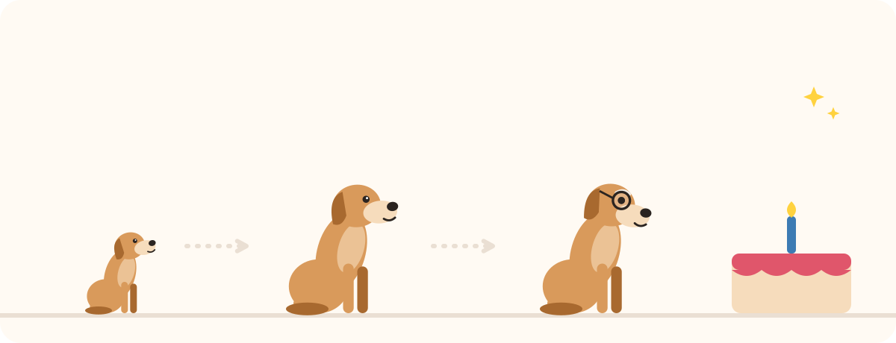

🎂 Quel âge a votre animal en âge humain ?
Indiquez son âge : nous calculons son équivalent humain et vous donnons les conseils adaptés à son étape de vie.

Comment est-ce calculé ?
Nous utilisons l'estimation la plus courante : la première année d'un chien ou d'un chat équivaut à environ 15 ans humains, la deuxième à environ 9 ans de plus, puis chaque année compte pour 4 à 6 ans selon l'espèce et la taille (les grands chiens vieillissent plus vite). Ce n'est qu'une estimation : la race, la santé et le mode de vie comptent aussi.
Le tableau des âges en un coup d'œil
Équivalent en années humaines, avec la même estimation que le calculateur ci-dessus :
| Âge de l'animal | Petit chien (moins de 10 kg) | Chien moyen (10 à 25 kg) | Grand chien (plus de 25 kg) | Chat |
|---|---|---|---|---|
| 1 an | 15 | 15 | 15 | 15 |
| 2 ans | 24 | 24 | 24 | 24 |
| 3 ans | 28 | 29 | 30 | 28 |
| 5 ans | 36 | 39 | 42 | 36 |
| 7 ans | 44 | 49 | 54 | 44 |
| 10 ans | 56 | 64 | 72 | 56 |
| 12 ans | 64 | 74 | 84 | 64 |
| 15 ans | 76 | 89 | 102 | 76 |
Pourquoi la règle « 1 an = 7 ans » est fausse
On entend souvent qu'une année de chien vaut sept années humaines. En réalité, chiens et chats grandissent très vite au début : à un an, ils sont déjà l'équivalent d'adolescents, et à deux ans, de jeunes adultes. Ensuite, le vieillissement ralentit. Chez le chien, la taille compte aussi : les grands chiens vieillissent plus vite que les petits, et sont considérés comme seniors plus tôt.
Les étapes de la vie et leurs besoins
- Chiot ou chaton (moins d'un an) : la période idéale pour la socialisation et les bonnes habitudes. Séances d'éducation très courtes, beaucoup de jeu et de repos.
- Jeune (1 à 3 ans) : beaucoup d'énergie et parfois une « crise d'adolescence ». C'est le moment de consolider le rappel et la marche en laisse.
- Adulte : la routine s'installe. Gardez des activités qui font travailler sa tête (jeux de flair, jeux d'intelligence) et surveillez son poids.
- Senior : vers 7 ans pour la plupart des chiens (plus tôt pour les grands), vers 11 ans pour les chats. Adaptez l'exercice, offrez un couchage confortable et parlez avec votre vétérinaire du rythme des visites de contrôle.
Raideur, changement d'appétit, de soif ou de comportement, désorientation : à tout âge, un changement inhabituel justifie une visite chez le vétérinaire. Pour l'éducation à chaque âge, consultez notre guide du chien et notre guide du chat.
Envie d'aller plus loin ? Faites notre quiz pour trouver la bonne méthode ou parcourez toutes les méthodes.